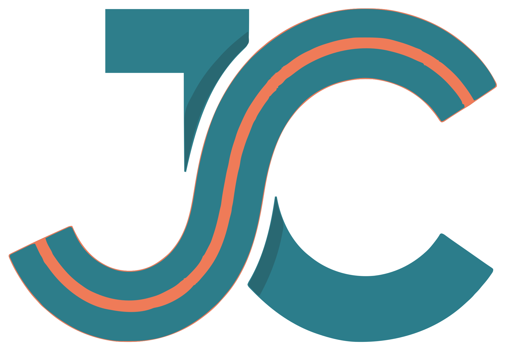

01SERVICE FLOW

TRAVEL COLLABORATION PLATFORM
Journey Connect
여행 일정과 동행자 모집을 하나의 사용자 흐름으로 연결한 여행 협업 플랫폼입니다. 기획 초안부터 프론트엔드·백엔드 구현, 외부 API 연동, AWS 배포까지 서비스 전반에 참여했습니다.
01
사용자 흐름을 연결한 알고리즘
크루 모집과 여행 루트를 분리된 기능으로 두지 않고, 사용자가 동행자를 찾고 일정을 함께 만드는 흐름이 이어지도록 알고리즘과 기능 구조를 설계했습니다.
02
Google API 통합
지도, 장소, 주소 변환, 시간대와 날씨 정보를 연결해 여행지 탐색과 일정 작성에 필요한 정보를 한 화면에서 활용하도록 구성했습니다.
03
운영 환경까지 직접
AWS EC2와 Oracle Cloud에 서비스를 이중 배포하고 Docker, Nginx, 도메인, HTTPS와 배포 워크플로를 전담했습니다. Oracle 환경은 포트폴리오 시연을 위해 상시 운영하고 있습니다.
Maps JavaScript APIGeocoding APIPlaces APIPlaces API (New)Time Zone APIWeather APIGemini